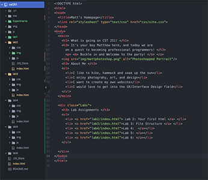
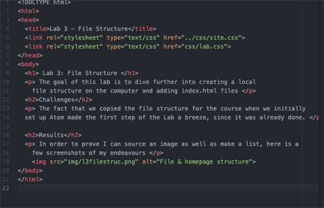

The goal of this lab is to dive further into creating a local file structure on the computer and adding index.html files
The fact that we copied the file structure for the course when we initially set up Atom made the first step of the Lab a breeze, since it was already done.
In order to prove I can source an image as well as make a list, here is a few screenshots of my endeavours
 